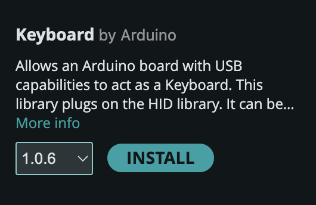
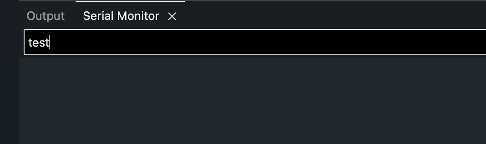
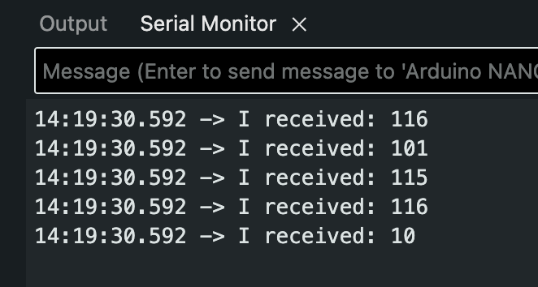
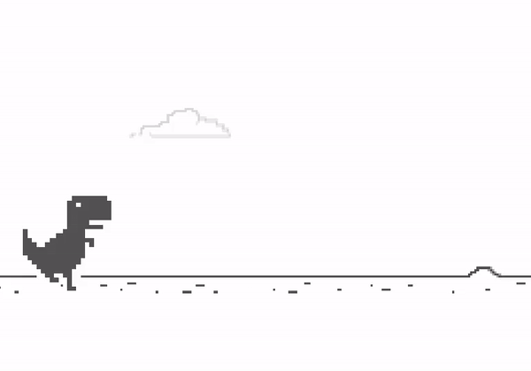

Hanan Flores: I'm so happy to welcome you all today into all of our living rooms across the world to talk about a program that is very dear to my heart, the Ford and Mozilla Tech and Society Fellowship program. My name is Hanan Elmasu, and I'm the director of the Mozilla Foundation Fellowships and Awards program, and I'll be your co host for this conversation alongside someone I suspect many of you already know Alberto Cerda Silva, who's the program officer at Ford's Tech and Society program. And together with our four panelists today, we're going to take you on a little journey of this unique partnership to place technology strategist and civil society organizations across different parts of the world.
Keyboard
testdfe
Intro
First of all, keep in mind the official Arduino Documenation for a more complete reference:
Let’s locate one of the built-in examples.
Go to:
File > Examples > 09.USB > Keyboard > KeyboardSerial
#include "Keyboard.h"
void setup() {
// open the serial port:
Serial.begin(9600);
// initialize control over the keyboard:
Keyboard.begin();
}
void loop() {
// check for incoming serial data:
if (Serial.available() > 0) {
// read incoming serial data:
char inChar = Serial.read();
// Type the next ASCII value from what you received:
Keyboard.write(inChar + 1);
}
}KeyboarSerial Code Breakdown
The Keyboard Library
Notice the line:
#include "Keyboard.h"This means we are using the Keyboard library. If not
installed, locate it using the library manager.

Initializing Keyboard Control
The function Keyboard.begin() is inside setup() to start
the process.
void setup() {
// initialize control over the keyboard:
Keyboard.begin();
}Read Incoming Serial Data
Serial.available() is a function used to know when a
message has been received and stored.
When you write a message in this text box and press enter, arduino receives it and stores it into its memory until Serial.read() is used.

Serial.available() simply returns the number of bytes of that stored data.
Using the example from the arduino documentation of
Serial.available(),
void loop() {
// reply only when you receive data:
if (Serial.available() > 0) {
// read the incoming byte:
int incomingByte = Serial.read();
// say what you got:
Serial.print("I received: ");
Serial.println(incomingByte, DEC);
}
}Sending a message of “test” and pressing enter results in the incoming Byte data returning:

This makes sense because the data is being printed using
Serial.println() using a base10 format, which means it is
returning the ascii code associated with each letter.
Using a text to ASCII code converter shows the same result where:
- t:
116 - e:
101 - s:
115 - t:
116 - (new line):
10
NoteIn Arduino programming, DEC is a pre-defined constant used to specify that a value should be treated or displayed in the decimal (base 10) format.
It is used in the second parameter of
Serial.println()Serial.println(val, format)It is DEC by default.
Now that we know about ASCII codes and how a minimal program that
reads incoming serial data works, we can understand the last part of the
KeyboardSerial.ino example.
Keyboard write()
The Keyboard.write() function sends a keystroke to your
computer as if a user has physically pressed a keyboard key.
It expects either a letter (char data type):
Keyboard.write('A');Or an ascii code (int data type):
Keyboard.write(65);Note65 is the ASCII code for
A.Check out a table with each character with its corresponding ASCII code.
WarningA value that has single quotes
''is known as a char data type.Check out the Arduino Documentation: Char
// read incoming serial data:
char inChar = Serial.read();
// Type the next ASCII value from what you received:
Keyboard.write(inChar + 1);Note
It may be confusing, but 1 is being added to a char data type. Since a char has an ASCII representation, you can perform arithmetic.
From the Char Arduino Documentation:
This means that it is possible to do arithmetic on characters, in which the ASCII value of the character is used (e.g. A + 1 has the value 66, since the ASCII value of the capital letter A is 65).
In theory, sending a serial message to Arduino in the form of a
letter, will result in Arduino simulating the key press of the letter
that is one value higher of the one received (in the ASCII table). For
example: Typing A and pressing enter will result in Arduino
simlulating the keypress of B.
Try it! Type in the Serial Monitor and see it be replaced with a B when you press enter.
Using Special Keys and Keyboard Modifiers (Shift, Ctrl, etc)
Check out the Arduino documentation for this: Keyboard Modifiers and Special Keys
What if you wanted to control a game that uses special keys or modifiers?
Here I will use the classic Google Dino Run as an example to be played with an Arduino: (Link to Dinosaur T-Rex Game)

According to the description, the up arrow key is used to jump, and the down arrow key is used to crouch.
In the Arduino Documentation, it tells us that we can use the const
KEY_UP_ARROW and KEY_DOWN_ARROW for these
keys.
I modified to code to include one more button:
#include "Keyboard.h"
void setup() {
// open the serial port:
Serial.begin(9600);
// initialize control over the keyboard:
Keyboard.begin();
}
void loop() {
int upbuttonState = digitalRead(2);
int downbuttonState = digitalRead(3);
if (upbuttonState == 1) {
Keyboard.write(KEY_UP_ARROW);
}
if (downbuttonState == 1) {
Keyboard.write(KEY_DOWN_ARROW);
}
delay(10);
}